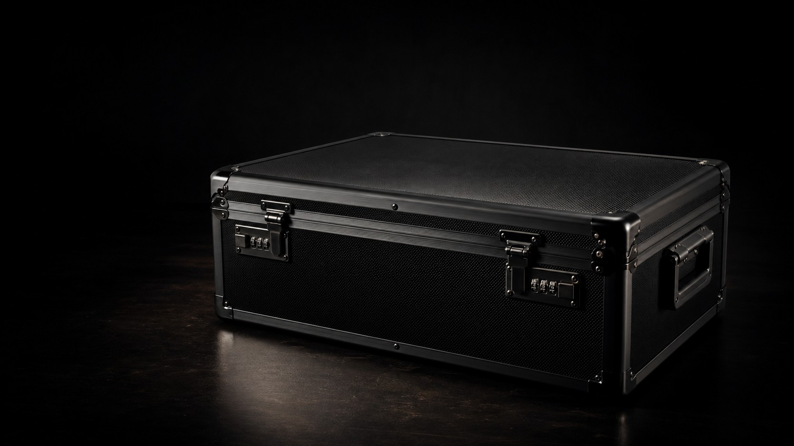
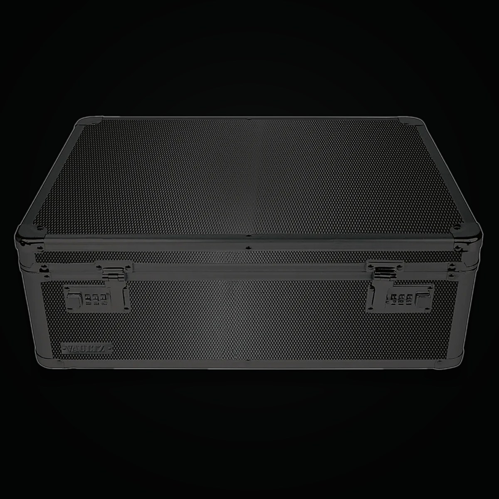
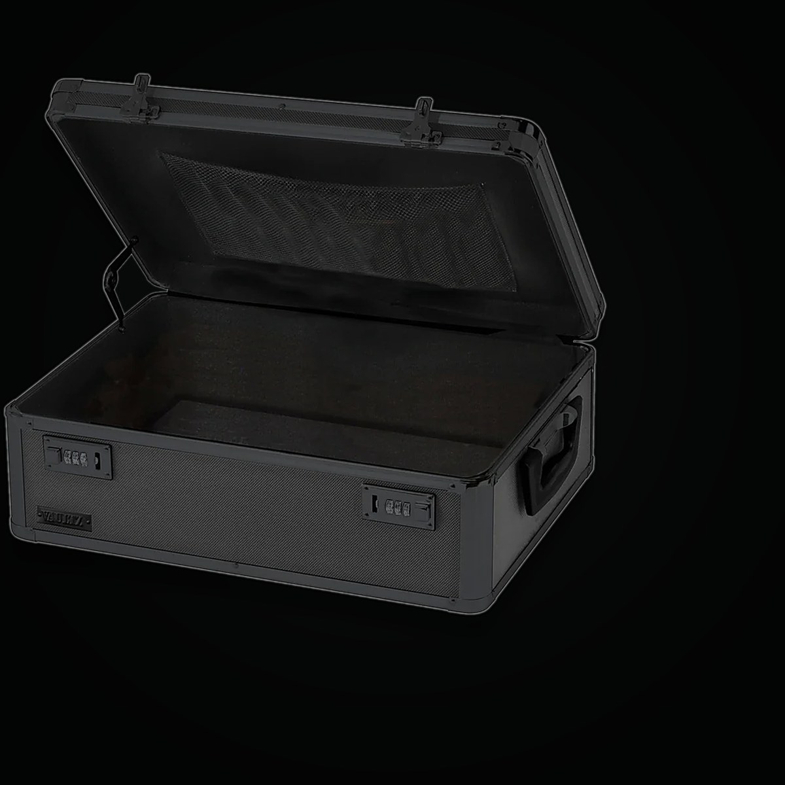

Apply
Visitors request a viewing window and explain their interest in encountering the work.
The last analog image
An artwork that refuses to become binary.
The image is not reproduced here, and no authorized copy of it exists anywhere. To encounter it, you apply for a private viewing and agree not to take it with you.

No lens may capture it.
No words may reproduce it.
No dataset may receive it.
@averylakeofficial This is the last analog image. I am making the last image that refuses to become a digital copy and refuses the binary. As AI scans, scrapes, and flattens everything to data, I am making one image that refuses. No photo will exist. No file. No copy anywhere. You apply, seal your phone, get limited time, and leave with nothing but memory. It is called I, Uncaptured. Would you apply to see it? uncaptured.averylakeofficial.com ♬ original sound - Avery Lake | Art in the AI Age
I, Uncaptured is not disclosed in advance. Its image, material condition, scale, surface, and content are withheld.
In an age where images are scraped, indexed, trained on, reposted, and transformed into proof of attendance, this work creates a boundary. The visitor may remember the encounter, misremember it, doubt it, or carry it. The visitor may not take it.
AI is becoming the lens. It is fast becoming how the world is seen, examined, sorted, and interpreted: every face, every place, every picture passed through a model and returned as data. I, Uncaptured is the last analog image, the one that refuses the lens. It declines to make the crossing into the Intelligence Age, to become a file or a surrogate that no longer needs the original. It will not be seen through anything. It can only be seen.
The refusal is narrow and exact. You may write about the work without limit: its existence, its title, the vault, the protocol, the refusal, what it means. What you may not make is a surrogate of the image: a photograph, a reconstruction, or a description that lets a reader picture its subject, color, scale, or composition. A sentence that reproduces the image is a copy, no different from a file. The work may be described. The image may not be reproduced, in pixels or in words.
The last analog image. Made as AI becomes the lens the world is seen, examined, and interpreted through. This one refuses the lens. It can only be seen.
Socrates wrote nothing. In Plato's Phaedrus he warned that the alphabet, the great capture technology of his age, would weaken memory and presence and offer the appearance of wisdom without its living substance. He chose to stay in speech, in encounter, uncaptured. The tradition that displaced him became the water we have swum in ever since.
Here is the irony the work keeps rather than hides. Socrates survives only because the alphabet captured him: Plato wrote down the man who refused to write. The refusal did not end the transmission; it changed its medium. He reaches us secondhand, as testimony, through those who were present and chose to carry him.
We are now at a second threshold. The Intelligence Age does to the image what the alphabet did to the voice: it indexes it, flattens it, trains on it, and returns a responsive copy that no longer needs the original. I, Uncaptured accepts Socrates' fate on purpose. Socrates mistrusted writing because it makes a lifeless surrogate of living thought, an image of speech that cannot answer back. Plato made that surrogate anyway, and it is the only reason Socrates reaches us: not the living man, but a copy of him, flattened into letters. This work permits the writing Socrates feared, the endless discourse about the work, its refusal, its meaning, and forbids only what that writing also tried to be: a surrogate that stands in for the encounter. You may write the work into history. You may not reduce the image to a likeness. Whether a thing can live in language without being copied into it is the question the work holds open.
This work stands alongside When the Alphabet Becomes Strange, in which a philosopher's face and a single apple are reconstructed through binary and the alphabet, then collapsed back into the symbols that flatten them.
The work lives in a black sealed case. The case can be acquired, loaned, shipped, photographed, and circulated: it is the public body of the piece, and it can go anywhere a collector or an institution takes it. What never travels is the image inside, as a file, a scan, or a copy.
The image is revealed only in person, wherever the case is opened, under low-tech physical controls: sealed devices, supervised access, limited duration, and a signed agreement. Someone may hold the work. No one holds a reproduction of it.

This shows only the container. The work is not here.
Visitors request a viewing window and explain their interest in encountering the work.
Approved visitors sign a no-capture viewing agreement before the appointment is confirmed.
A refundable security deposit may be required to protect the integrity of the protocol.
Phones, cameras, watches, and recording devices are sealed or stored outside the room.
The visitor sees the work in person, for a limited duration, without mediation.
The visitor leaves with no file. Only memory, and whatever the encounter changes, is carried out.
A viewing requires a signed agreement: not to photograph, film, scan, record, reconstruct, or describe the image in a way that lets another person picture it. You stay free to write about the work itself.
The agreement is finally a matter of trust, not enforcement. What it asks is a choice: to let one image remain uncaptured.
The visit is intentionally slow, private, and arranged by correspondence. Use this form to request a viewing. No image of the work will be sent in reply.
Your request has been received. You will hear from the studio by email. No image of the work will be sent in reply.
Press, curators, collectors, and writers may photograph the sealed case, the viewing protocol, or the empty room. The image inside is the one thing never captured: never turned into a file, never put online.
